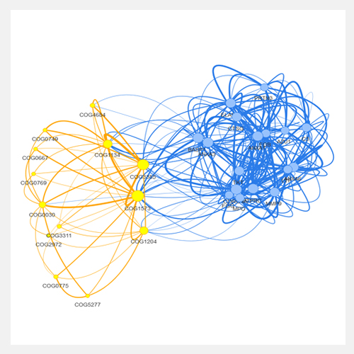

iMetaShiny Apps
Analyze your metaproteomic data and generate publishable scientific figures
All
Metaproteomics
Statistics
Simply plotting
Special analysis
Quick MQ summary
Quick MQ summary
Quickly summarize MQ result by visualization
Enrichment analysis
Enrichment analysis
Caluculate metaproteome encichemnt among function categories and taxon levels
Phylo explorer
Phylo explorer
Quick visualization of any hierarchical data in a couple of ways
Multi-variable analysis
Multi-variable analysis
A quick and easy way to do multi-variable analysis, including PCA, PLSDA and t-SNE
Differential expression analysis
Differential expression analysis
Identify differential expressions according to hypothesis test and fold change, and visualize using volcano plot
Coocurrence analysis
Coocurrence analysis
Provide a graphic visualization of potential relationships between features
PepFunk
PepFunk
A peptide-focused functional enrichment workflow for gut microbiome metaproteomic studies
Play figure
Play figure
Figure oriented organization of code to plot figures
Play table
Play table
Plot a few particular figures hard to render elsewhere

Quick network
Quick network
Quick and easy visualization of your network data
iMetaMap
iMetaMap
Advanced visualization of the taxonomy output generated by MetaLab
Sets explorer
Sets explorer
Visualizing intersections of sets
Batch effect explorer
Batch effect explorer
Batch effect explore and correction for your dataset
Circadian analysis
Circadian analysis
For omic circadian analysis, a wrapper of JTK cycle algrithm.
Sample order scramble
Sample order scramble
Randomize your sample running order
96 well randomizer
96 well randomizer
Randomize your 96 well plates
RapidAIM demo
RapidAIM
RapidAIM functional drug screening demo